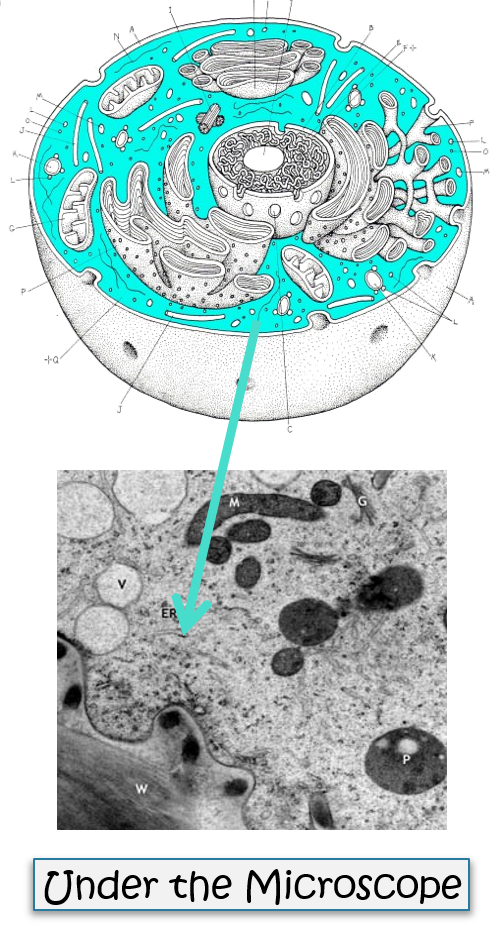

Cytoplasm
What is inside of the cell membrane?
- The Cytoplasm is a gel-like fluid contained by the cell membrane. This gel is made of water and nutrients used by the cell. This is what the organelles live in.
- Think of the Cytoplasm as kind of like runny Jell-O. It's thick enough to suspend the larger objects, like the organelles, and runny enough to let nutrients and small molecules float freely between the different parts of the cell.
